O que é: a conferência que vem antes de construir a atualização sozinha. Ela responde três perguntas, sem mudar nenhuma linha do programa e sem instalar nada no Windows: a versão de teste de hoje vira um programa empacotado que abre e trabalha? Os livros que o Kaique começou no programa de 28/10 abrem iguais nela? O que o empacotamento de hoje precisa mudar para o Velopack?
Veredito: PRONTO PARA CONFERIR. O programa empacotado de hoje abre, divide, endireita, corta, limpa em Preto e branco e grava o PDF. Um livro feito no programa de 28/10 abre nele sem perder nada, e o PDF sai idêntico ao de antes. Os três leitores de texto funcionam dentro do pacote. Há uma ressalva de imagem que já existia em 28/10 (faixa preta na beirada de algumas páginas do Righetti) e a lista do que falta para o Velopack.
Como foi testado sem aparecer na sua tela. O programa rodou numa área de trabalho escondida do Windows (a mesma tela "de verdade", com fonte e janelas, mas que nunca é mostrada no seu monitor). Os botões foram apertados por mensagens do próprio Windows e pelo leitor de tela do Windows, sem tocar no seu mouse nem no teclado. Os prints saem dessa área escondida. Cada teste usou uma pasta de dados própria: a sua pasta do programa não foi tocada (conferido: nenhum livro de teste apareceu nela, e os arquivos dela continuam com as datas antigas).
.exe com a pasta, a mesma que o instalador leva).scipy não foi achada.cb41a22a (16/11), que só difere da ponta de hoje no Livro de
decisões.Livro: cópia das folhas 21 a 30 do Righetti (duas páginas por folha, com borda preta de scanner; a cópia foi posta de pé, porque o Righetti vem deitado e o programa não gira sozinho, defeito já anotado em 22/10).
O caminho, como o Kaique faria, no programa empacotado:
O PDF que saiu, uma página por quadro, na ordem (dividida, endireitada, cortada, Preto e branco, ajustes de fábrica):
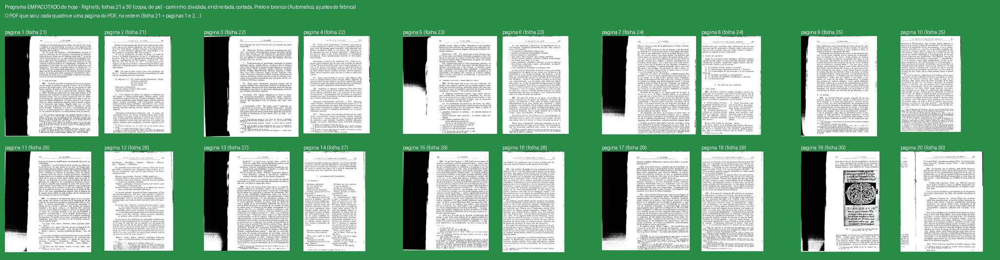
O que vi (olho): as 10 folhas viraram 20 páginas, na ordem; todas em preto e branco, com o texto legível; a gravura da página 19 ficou; as páginas da direita saíram limpas. Nas páginas da esquerda (1, 3, 5, 7, 13, 15, 17, 19) sobra a faixa preta do scanner na beirada esquerda (ver a ressalva 1).
Antes desse, o mesmo livro rodou mais duas vezes: com a receita de fábrica (sem Dividir e em Original, que é o que vem
marcado de fábrica) e com Dividir em Original. As duas também deram PDF sem erro (guardadas em saida_teste).
Os três leitores de texto no empacotado (--conferir-ocr, máquina), nas páginas Palatino 57 e Horas 11: docTR,
Tesseract e Kraken disponíveis, cada um achado dentro da pasta empacotada, com o mesmo número de linhas do
empacotado de 29/09 (docTR 24 e 12; Tesseract 16 e 0; Kraken 17 e 16). O detector de gravura do ScanTailor abre e lê.
O Kraken levou 90 a 98 s para abrir o motor da primeira vez (o PC estava rodando outro teste ao mesmo tempo).
Nenhum dos testes deixou erro no registro de erros do programa.
Como foi feito. Uma cópia à parte do código de 28/10 (o mesmo do instalador que está na sua Área de Trabalho:
o .exe é de 28/10 18:10, e o último salvamento de código antes dele é o de 17:30). Com ela, numa pasta de dados
própria, um projeto de verdade: Righetti, 14 primeiras folhas (cópia), girar 1/4 à esquerda todas as folhas,
Automático (Dividir, Endireitar, Cortar, Limpar em Preto e branco, Montar cadernos), e à mão: Mágico pro na página 6,
corte à mão na página 8, uma gravura marcada à mão na página 10, a página 2 tirada do livro. PDF: "27 páginas, 2
cadernos, 14 folhas para imprimir" (prints a1 a a3).
Depois, a pasta de dados do programa de 28/10 foi copiada para a pasta de dados do programa empacotado de hoje (é o que acontece no notebook do Kaique: a pasta de dados fica, o programa muda).
O que aconteceu no programa de hoje: o livro aparece em "Seus livros" com "pronto, PDF gerado" (print b1); clicando, abre; "Continuar" leva à área de trabalho com a página 2 "apagada" e as páginas conferidas com o tique (print b2); "Confirmar e processar" avisa que já existe o PDF de antes (print b3) e oferece "salvar como ... (2)"; "Ficou pronto!" em 38 s, com os mesmos "27 páginas, 2 cadernos, 14 folhas" (print b4).
A comparação (máquina):
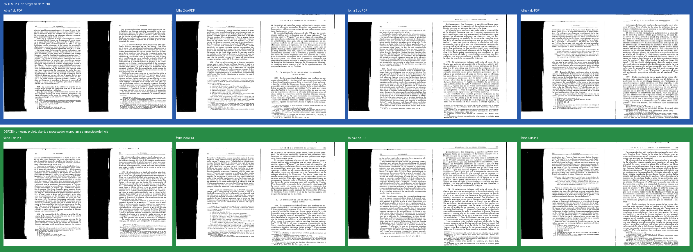
Faixa azul: o PDF do programa de 28/10. Faixa verde: o mesmo livro aberto e processado no programa empacotado de hoje. As quatro primeiras folhas do PDF de cadernos.
O que mudou para quem usa: só a tela. O livro antigo agora abre primeiro na tela do livro aberto (com "Continuar", "Rodar o automático...", "Confirmar e processar...") antes da área de trabalho. Isso é das decisões novas da obra, não defeito. Nada do trabalho dele se perde.
main.py atende dois modos sem janela antes de abrir a janela: o dos ajudantes que
desenham as páginas (cada abertura do programa lança dois deles, com o mesmo .exe; visto rodando) e o
--conferir-ocr. A peça do Velopack que tem de ser a primeira coisa do programa entra aí, com cuidado para os
ajudantes não procurarem atualização.tests/test_empacotar.py conferem o Inno; pela regra de 03/11 eles só mudam com o seu
"sim"..exe (Kraken, Tesseract), nunca grava ali, e os
livros e projetos ficam na pasta de dados, fora do programa: trocar a pasta do programa não toca no trabalho..exe instalado de 28/10. Instalar pediria
administrador e mexeria no seu Windows. O código e as peças são os mesmos daquele dia; o ambiente do Python é o de
hoje.relatorios/frente-kaique-2026-11-16/etapa2/item2/faixa-preta-paginas-da-esquerda.png.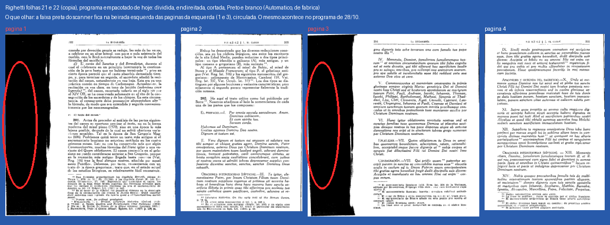
relatorios/frente-kaique-2026-11-16/etapa2/scripts/ (área escondida, piloto, projeto de 28/10,
comparação).item3/projeto-comparado.txt, item3/pdf-comparado.json, item3/pdf-antes-depois.png.item2/palatino_p057.json, item2/horas_p011.json.prints/ (a = programa de 28/10; b = livro de 28/10 no empacotado de hoje; c = livro novo no empacotado).kaique-etapa2): dist/EditorImpressao/ (o programa empacotado) e saida_teste/etapa2/
(pastas de dados, PDFs, todos os prints).a1: programa de 28/10, depois do Automático (Righetti 14 folhas, giradas, divididas, 28 páginas).
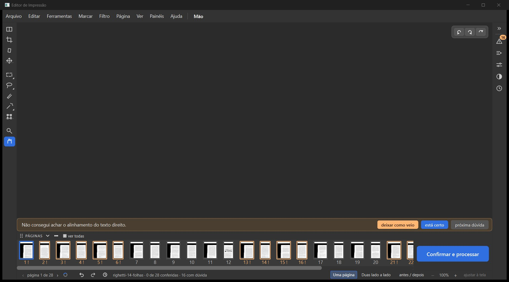
a2: programa de 28/10, página 10 com a gravura marcada à mão (retângulo laranja).
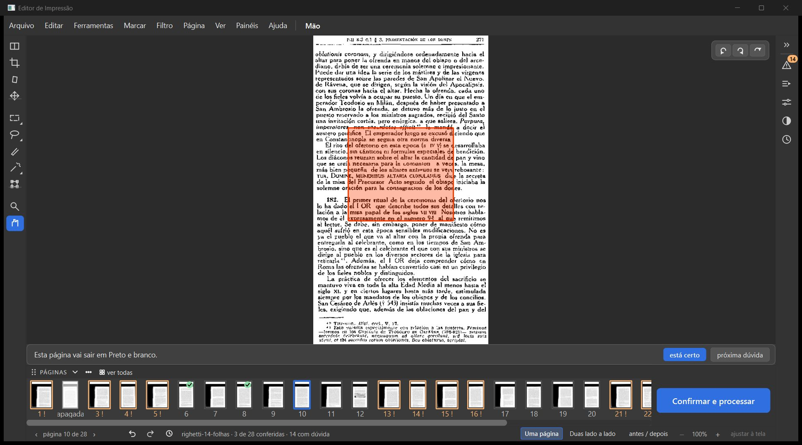
a3: programa de 28/10, "Ficou pronto!" (27 páginas, 2 cadernos).
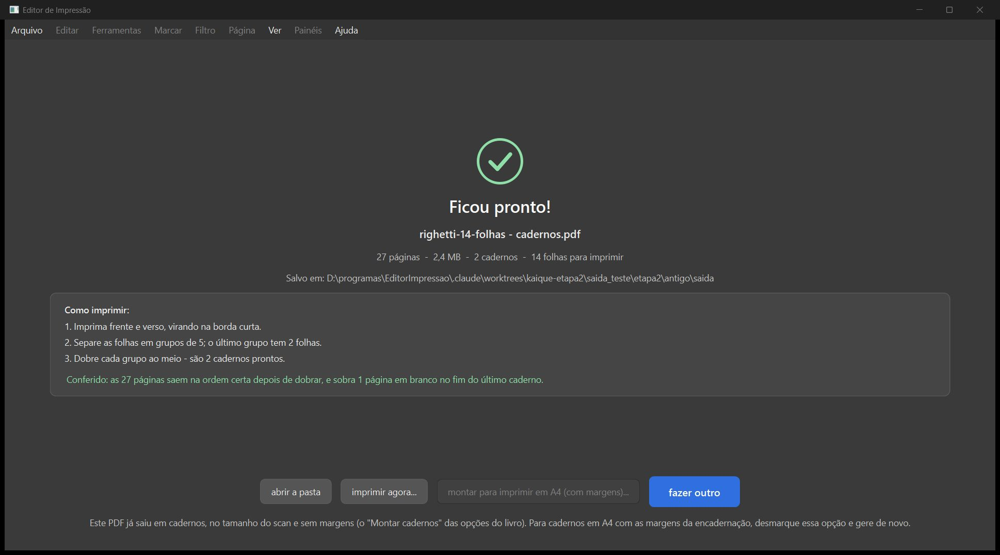
b1: empacotado de hoje com a pasta de dados de 28/10: o livro em "Seus livros".
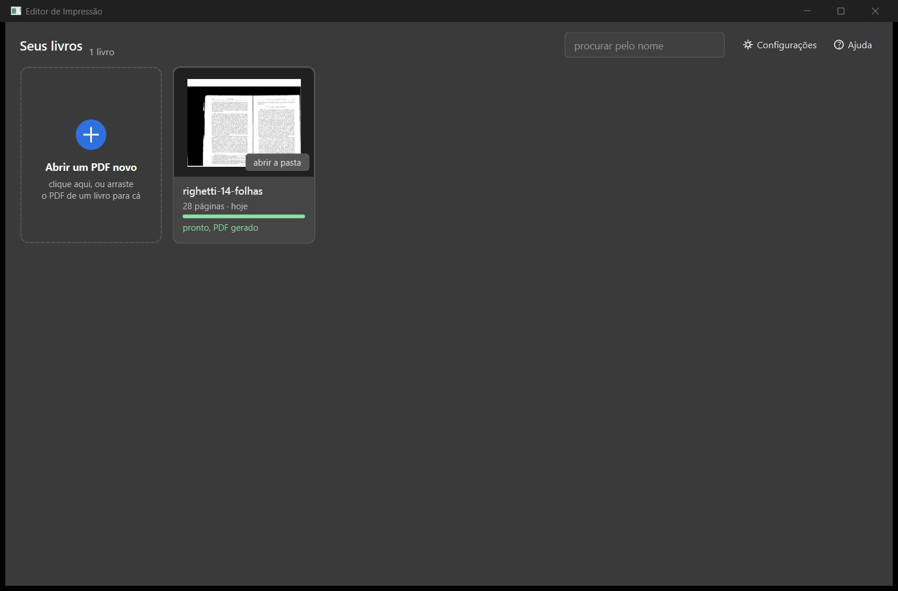
b2: empacotado de hoje, o livro de 28/10 na área de trabalho (página 2 "apagada", 6 e 8 conferidas).
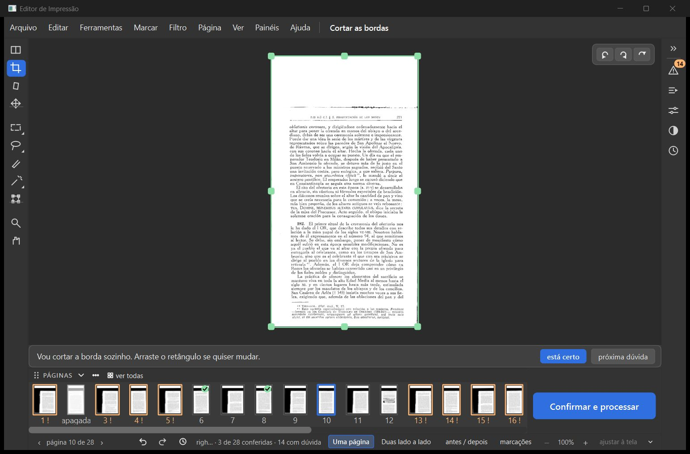
b3: empacotado de hoje, "Confirmar e processar" (27 páginas vão para o PDF, 1 foi apagada).
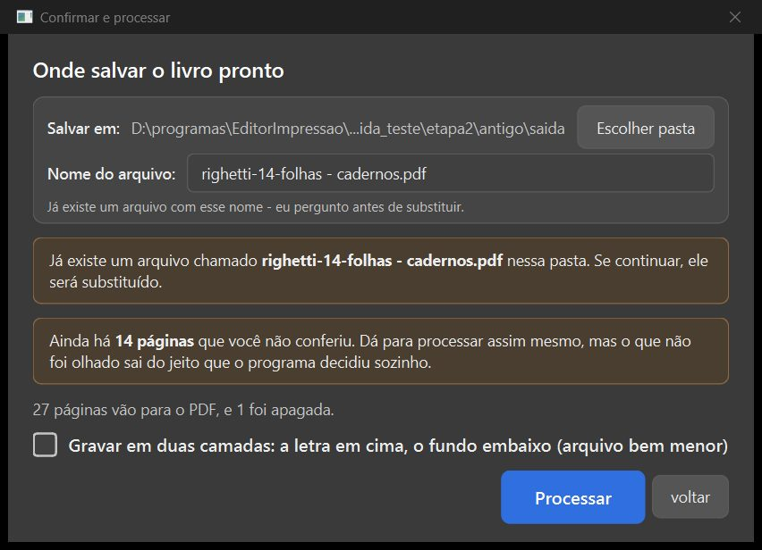
b4: empacotado de hoje, "Ficou pronto!" com os mesmos números de 28/10.
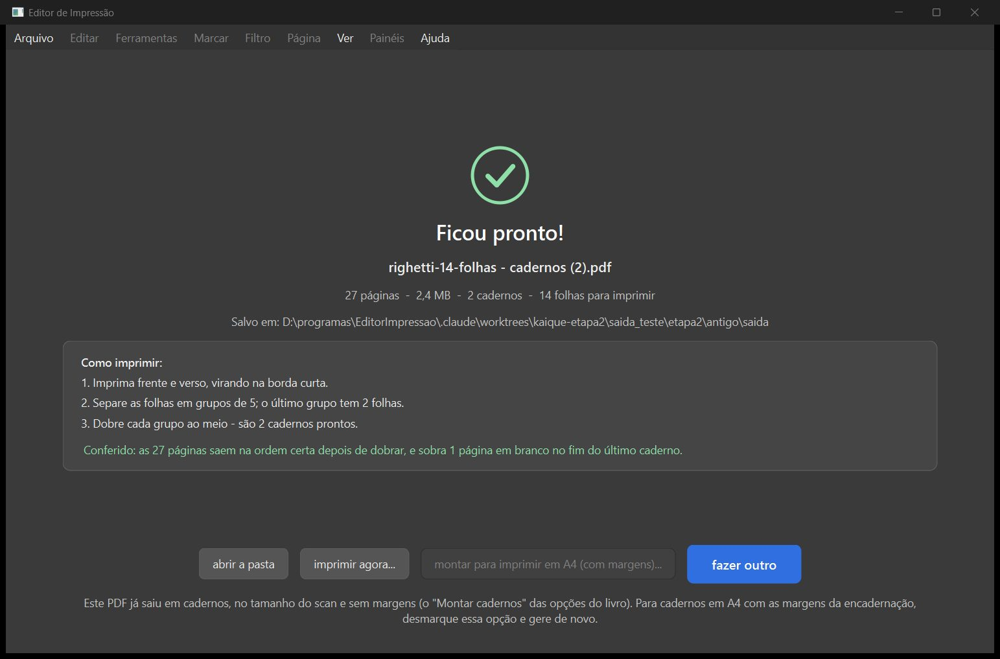
c1: empacotado de hoje, livro novo (Righetti folhas 21 a 30, cópia) aberto.
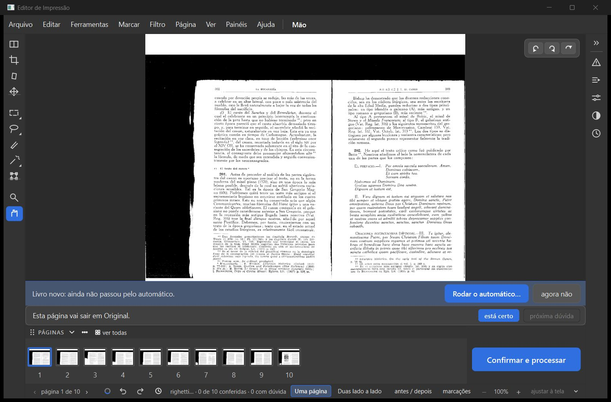
c2: empacotado de hoje, janela do Automático com Dividir, Endireitar, Cortar e Limpar em Preto e branco.
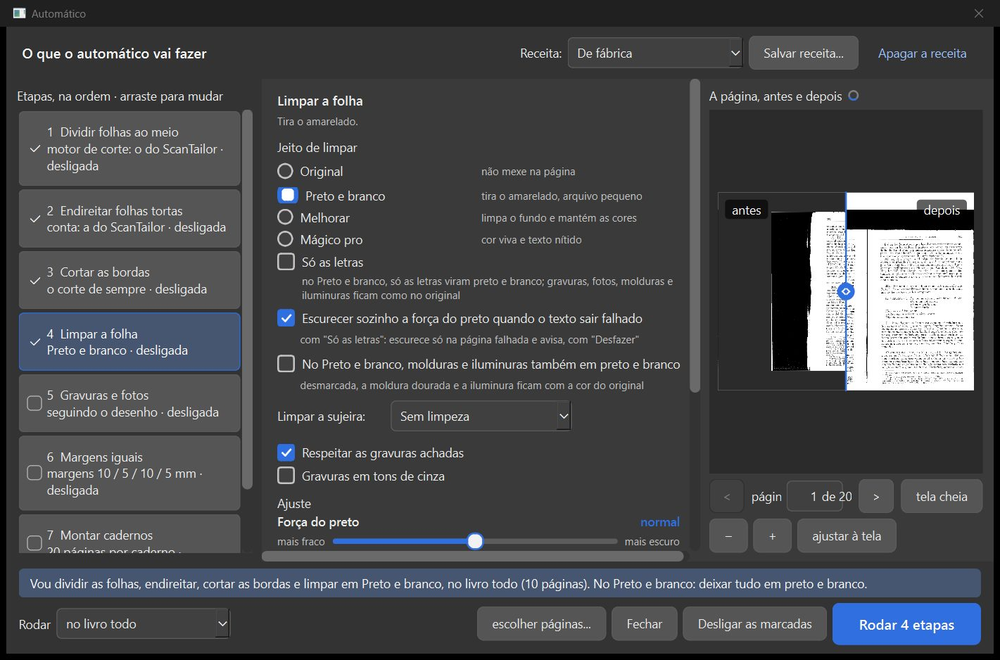
c3: empacotado de hoje, área de trabalho depois do Automático (página 1, dividida, endireitada, cortada, Preto e branco).
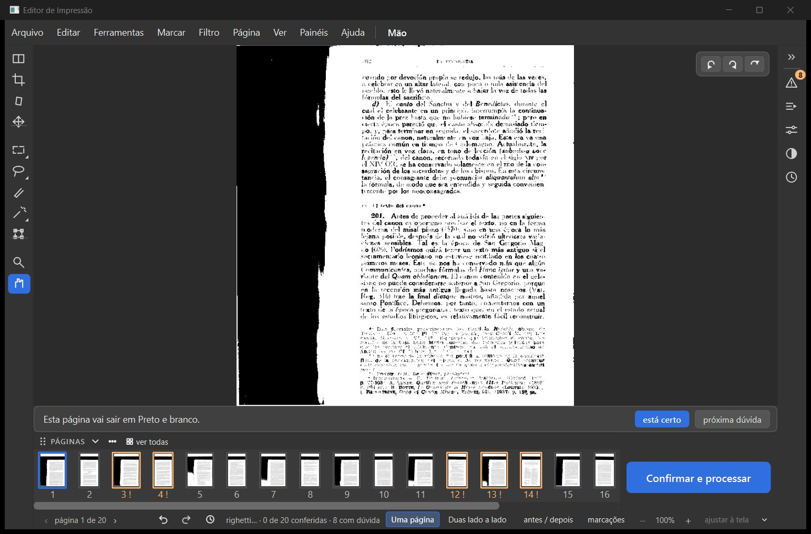
c4: empacotado de hoje, "Ficou pronto!" (20 páginas).
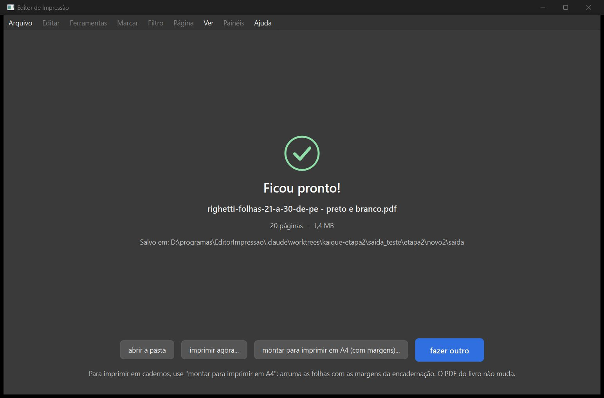
Editor de Impressão · gerado em 16/11/2026 às 12:18